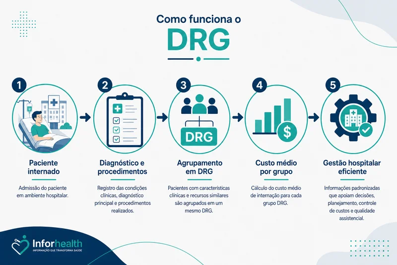
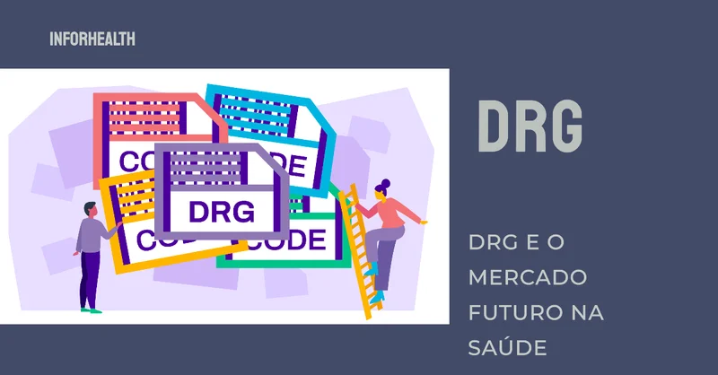

Explorando o Sistema de DRG
O sistema de Grupos Relacionados ao Diagnóstico (DRG), amplamente utilizado em países desenvolvidos, tem o potencial de transformar a gestão hospitalar e o financiamento da saúde no Brasil. Desenvolvido na década de 1960 pela Universidade de Yale, o DRG classifica pacientes internados com base em diagnósticos e procedimentos semelhantes, permitindo um controle mais rigoroso de custos e qualidade. No entanto, a implementação dessa metodologia no Brasil enfrenta uma série de desafios que precisam ser superados para que seus benefícios sejam plenamente aproveitados.

O Que é o DRG e Como Ele Funciona?
O DRG é um sistema de classificação de pacientes que agrupa casos clínicos semelhantes em termos de consumo de recursos hospitalares. A ideia central é que pacientes classificados dentro do mesmo grupo apresentem evoluções clínicas e custos semelhantes, permitindo uma melhor gestão dos recursos hospitalares. Cada DRG representa um “produto hospitalar” com um custo médio predefinido, sendo utilizado para calcular o reembolso aos hospitais de forma mais justa e eficiente.
Benefícios do DRG: Eficiência e Qualidade Assistencial
A adoção do DRG em diversos países tem demonstrado uma série de benefícios, como maior eficiência nos gastos, redução no tempo de internação e melhoria no controle da gestão hospitalar. Além disso, o sistema contribui para a redução de eventos adversos e para a melhoria da qualidade do atendimento ao paciente, tornando-se uma ferramenta essencial para a sustentabilidade do sistema de saúde.

Desafios na Implementação do DRG no Brasil
Apesar das vantagens claras, a implementação do DRG no Brasil ainda enfrenta barreiras significativas. Entre os principais desafios estão:
Falta de Dados Confiáveis sobre Custos Hospitalares
A eficácia do DRG depende de informações precisas sobre os custos reais das internações hospitalares. No entanto, muitos hospitais brasileiros carecem de sistemas de custeio bem estruturados, dificultando a precificação correta dos grupos de diagnóstico.Resistência Cultural às Mudanças
A transição para o modelo DRG requer uma mudança significativa na forma como os serviços de saúde são remunerados e gerenciados. Essa mudança enfrenta resistência de profissionais e gestores que preferem manter os modelos tradicionais de remuneração.Necessidade de Treinamento de Profissionais
A implementação eficaz do DRG exige a capacitação de profissionais em diversas áreas, desde médicos e enfermeiros na codificação de diagnósticos e procedimentos, até gestores e analistas responsáveis pela aplicação da metodologia.Adaptação da Metodologia à Realidade Local
O DRG, embora seja um sistema internacional, precisa ser ajustado para refletir as características específicas do sistema de saúde brasileiro, como os padrões epidemiológicos, a prática médica e os custos locais.Investimento em Sistemas de Informação
A aplicação do DRG depende de sistemas de informação robustos para a coleta, processamento e análise dos dados. No entanto, muitos hospitais e operadoras de saúde no Brasil ainda carecem da infraestrutura tecnológica necessária para suportar essa metodologia.
A implementação do DRG no Brasil apresenta uma oportunidade significativa para aprimorar a eficiência e a qualidade dos serviços de saúde. No entanto, para que essa transição seja bem-sucedida, será necessário enfrentar os desafios estruturais, culturais e tecnológicos. Investimentos em infraestrutura, capacitação profissional e adaptação à realidade local são essenciais para que o DRG possa cumprir seu potencial de melhorar a gestão hospitalar e o atendimento ao paciente no Brasil.

O curso visa fornecer uma compreensão abrangente dos Grupos de Diagnósticos Relacionados (DRG), incluindo conceitos básicos, metodologias de codificação, aplicações práticas, desafios e tendências futuras. Ideal para profissionais de saúde, gestores hospitalares, analistas de saúde e médicos interessados em otimizar processos clínicos e administrativos.
Tansforme a qualidade do cuidado em sua instituição!
Aprimore suas habilidades e conhecimentos com:
- Visão geral abrangente dos DRG: desde sua história e contexto até conceitos básicos, metodologias de codificação e aplicações práticas.
- Domínio da codificação precisa: aprenda como uma codificação correta impacta diretamente na atribuição de DRG e nos resultados financeiros da instituição.
- Mergulhe na estrutura e metodologia de codificação em DRG: desvende os sistemas de codificação ICD-10 e CPT, as regras de agrupamento em DRG e pratique com exemplos práticos e estudos de caso.
- Explore as aplicações de DRG na gestão de saúde: domine o uso do DRG para planejamento e gestão de recursos, análise de desempenho, benchmarking e integração com sistemas de informação.
- Prepare-se para os desafios e tendências futuras: adapte o DRG ao seu contexto, navegue por questões éticas e legais e explore as inovações que moldarão o futuro da metodologia.
CONFIRA CONTEÚDO PROGRAMÁTICO, CLIQUE AQUI!
Juntos, podemos construir um futuro onde a saúde de qualidade seja acessível a todos!

Traga sua Equipe e aproveite Descontos Especiais para grupos de 4 ou mais! 🚀 Personalize este curso para sua Organização com nossa modalidade “In Company” 🏥.
Converse com nosso time!
👩❤️👨 Relacionamento com o Cliente 📲 19-99777-3084, clique aqui!
📞 Fale com nossa Equipe Técnica pelo Telefone ou WhatsApp ☎ 19-35971445.
Ou entre em contato: [email protected]